Chapter 27 Extensions to ggplot
The {ggplot2} package is made to be extensible - so that other people can write packages that add new (often niche) geoms for specific purposes. This chapter is a short tour of some of the neat extensions people have written, and when and where they can be useful. Some of these are distinct packages, and others are just cool ways to use ggplot. Please check out the links to the individual packages to learn more, as we will frequently just scratch the surface of what is available.
27.1 Goals for this Chapter
- learn how and why to use waffle plots
- learn how and when to use alluvial plots
- learn how and when to use lollipop plots
- learn how and when to use dumbbell plots
- learn how and when to use spaghetti plots
- learn how and when to use swimmer plots
27.2 Packages Needed for this chapter
You will need {tidyverse}, {medicaldata}, {waffle}, {ggalluvial}, {ggalt}, {ggrepel}, {ggforce}, {ggalt}, {ggtext}. {ggsignif}, {ggbump}, {survminer}, {ggcorrplot}, {plotROC}, {directlabels}, {geomtextpath}, {ggheatmap}, {ggQC}, {ggupset}, {plotly}, and {gganimate}.
# install.packages('tidyverse')
# install.packages('medicaldata')
library(tidyverse)
library(medicaldata)
library(ggrepel)
library(ggforce)
library(ggalt)
library(ggtext)
library(ggsignif)
library(ggbump)
library(survminer)
library(ggmosaic)
library(ggcorrplot)
library(plotROC)
library(directlabels)
library(geomtextpath)
library(ggheatmap)
library(ggQC)
library(ggupset)
library(ComplexUpset)
library(plotly)
library(gganimate)27.3 A Flipbook of Where We Are Going With ggplot Extensions
See the flipbook below, which contains some examples of what you can do with ggplot extensions.
You can use the the icons in the bottom bar to expand to full screen or share this flipbook. If you are in full screen mode, you can use the Home button to go the the first slide and the End button to go to the last slide, and the Escape key to get out of full screen mode.
27.4 A Waffle Plot
Why is this better than a bar plot or a dotplot?
In order to represent counts, or individual participants in a trial, a bar plot is a bit deceiving. It appears to be a continuous variable. But each participant in a clinical trial is a discrete individual. A bar plot can be helpful for very large numbers, but for manageable numbers it is a bit of a misrepresentation.
A dotplot, with geom_dotplot, would seem like a good option, but it only displays proportions, not counts.
In order to show outcomes for distinct individual participants, a waffle plot comes in handy. These have become quite popular in data journalism to represent counts. Let’s start with a waffle plot of
library(waffle)
indo_rct <- medicaldata::indo_rct
scaler <- 1
indo_data <- indo_rct %>% group_by(outcome, rx) %>% count() %>%
mutate(n = n/scaler)
indo_data %>%
#mutate(site = case_when(site == "1_UM" ~ "Michigan", site == "2_IU" ~ "Indiana", site == "3_UK" ~ "Kentucky", site == "4_Case" ~ "Case")) %>%
mutate(rx = str_sub(rx, 3L, 10L)) %>%
ggplot(aes(fill = outcome, values = n)) +
geom_waffle(color = "white", size=0.25, n_rows = 10, na.rm = TRUE,
flip = TRUE, radius = unit(0.7, units = "mm")) +
facet_wrap(~rx, nrow = 1,
strip.position = "bottom") +
scale_x_discrete() +
scale_y_continuous(breaks = seq(10, 40, 10),
labels = function(x) format(x * 10*scaler, scientific = F),
expand = c(0,0)) +
scale_fill_manual(values = c("#1a85ff", "#d41159" )) +
coord_equal() +
labs(
title = "Post-ERCP Outcomes by Treatment: <br><span style = 'color:#d41159;'>Pancreatitis</span>, or <span style = 'color:#1a85ff;'>No Event</span>, <br>in the Rectal Indomethacin Trial",
subtitle = sprintf("One square = %s Outcome, Each Row = 10 Outcomes", scaler),
x = "",
y = "",
caption = "Data: NEJM 2012; 366:1414-1422, Elmunzer"
) +
theme_minimal() +
#theme_ipsum_rc()+
theme(panel.grid = element_blank(),
panel.grid.major = element_blank(),
panel.grid.minor = element_blank(),
axis.ticks.y = element_line(),
plot.title = element_markdown(),
legend.position = "none") +
guides(fill = guide_legend(reverse = TRUE))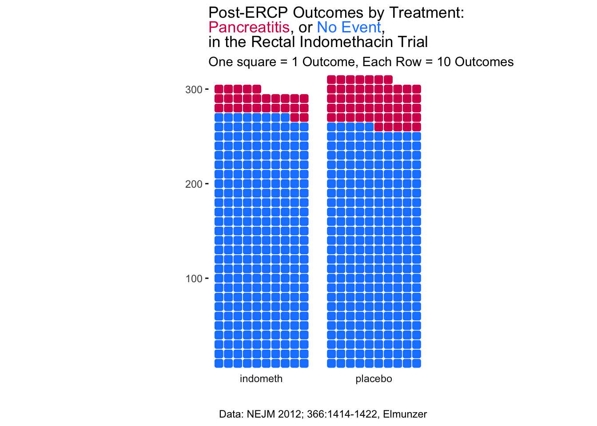
The waffle plot is an interesting hack of ggplot. The geom_waffle() is actually a faceted plot, with one row of facets (examine the code above). You can change the scaler constant to make each square count for N cases. You can learn more about the many capabilities of the {waffle} package - including pictograms and an alternative to pie charts - here.
Note that we have used colors in the title in place of a legend, by coloring the outcomes with the corresponding colors, using the {ggtext} extension package, which allows you to add color, backgrounds, images, bold face, or italic face to text in ggplots, using markdown/HTML tags. You can learn more about the many capabilities of the {ggtext} package and what it can do here.
27.5 An Alluvial Plot
An alluvial plot depicts flow, like a river, which can split off branches and re-unite streams. This kind of plot can be helpful to show patient flow from one state to the next. This requires the {ggalluvial} package, which you may need to install and then load with the library() function.
The example below shows the flow of patients with chest pain from ED triage to hospitalization and an outcome of survived or died, stratified by gender.
datafr <- tibble::tribble(
~gender, ~triage, ~next_day, ~outcome, ~count,
"Male", "ER", "Hospitalized", "Survived", 211,
"Male", "ER", "Hospitalized", "Survived", 43,
"Male", "ER", "Discharged", "Died", 280,
"Male", "ER", "Discharged", "Died", 15,
"Male", "Observation", "Hospitalized", "Survived", 67,
"Male", "Observation", "Hospitalized", "Died", 11,
"Male", "Observation", "Discharged", "Survived", 415,
"Male", "Observation", "Discharged", "Died", 5,
"Female", "ER", "Hospitalized", "Survived", 219,
"Female", "ER", "Hospitalized", "Survived", 33,
"Female", "ER", "Discharged", "Died", 250,
"Female", "ER", "Discharged", "Died", 45,
"Female", "Observation", "Hospitalized", "Survived", 88,
"Female", "Observation", "Hospitalized", "Died", 27,
"Female", "Observation", "Discharged", "Survived", 402,
"Female", "Observation", "Discharged", "Died", 14) %>%
mutate(gender = as_factor(gender),
triage = as_factor(triage),
next_day = as_factor(next_day),
outcome = as_factor(outcome))
ggplot(datafr,
aes(y = count, axis1 = gender, axis2 = triage,
axis3 = next_day)) +
geom_alluvium(aes(fill = outcome), width = 1/12) +
geom_stratum(width =1/12, fill = "black", color = "grey") +
geom_label(stat = "stratum", aes(label = after_stat(stratum))) +
scale_x_discrete(limits = c("gender", "triage", "next_day"), expand = c(.10, .10)) +
ggtitle("Patients Presenting with Chest Pain") +
scale_fill_manual(values = c("#1a85ff", "#d41159" ))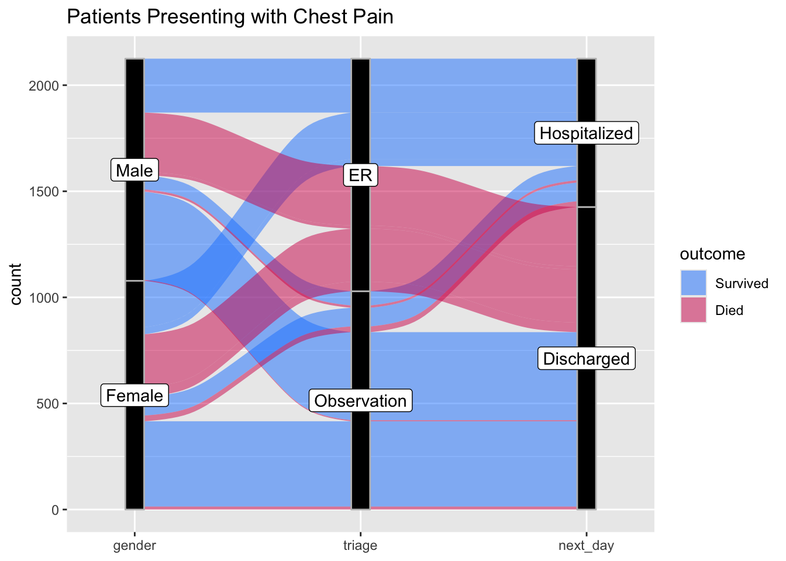
Now try this yourself. Copy the code below (click on the copy icon in the top right of the code chunk), paste it into your RStudio IDE, and edit to:
- show the additive effects of ethanol use, cirrhosis, and HCC on death rates. Code the outcome as Survived or Died.
datafr <- tibble::tribble(
~Ethanol_Use, ~Cirrhosis, ~HCC, ~outcome, ~count,
"Yes", "Yes", "Yes", "Survived", 4,
"Yes", "Yes", "Yes", "Died", 28,
"Yes", "Yes", "No", "Survived", 12,
"Yes", "Yes", "No", "Died", 45,
"Yes", "No", "Yes", "Survived", 2,
"Yes", "No", "Yes", "Died", 4,
"Yes", "No", "No", "Survived", 57,
"Yes", "No", "No", "Died", 26,
"No", "Yes", "Yes", "Survived", 3,
"No", "Yes", "Yes", "Died", 10,
"No", "Yes", "No", "Survived", 32,
"No", "Yes", "No", "Died", 26,
"No", "No", "Yes", "Survived", 1,
"No", "No", "Yes", "Died", 3,
"No", "No", "No", "Survived", 297,
"No", "No", "No", "Died", 15
) %>%
mutate(Ethanol_Use = as_factor(Ethanol_Use),
Cirrhosis = as_factor(Cirrhosis),
HCC = as_factor(HCC),
outcome = as_factor(outcome))
ggplot(datafr,
aes(y = count, axis1 = ____,
axis2 = ____,
axis3 = ____)) +
geom_alluvium(aes(fill = outcome), width = 1/12) +
geom_stratum(width =1/12, fill = "black", color = "grey") +
geom_label(stat = "stratum", aes(label = after_stat(stratum))) +
scale_x_discrete(limits = c("____", "____", "____"), expand = c(.10, .10)) +
ggtitle("Patients Presenting with Hepatitis C Infection") +
scale_fill_manual(values = c("#1a85ff", "#d41159" ))## Error in parse(text = input): <text>:26:32: unexpected input
## 25: ggplot(datafr,
## 26: aes(y = count, axis1 = __
## ^datafr <- tibble::tribble(
~Ethanol_Use, ~Cirrhosis, ~HCC, ~outcome, ~count,
"Yes", "Yes", "Yes", "Survived", 4,
"Yes", "Yes", "Yes", "Died", 28,
"Yes", "Yes", "No", "Survived", 12,
"Yes", "Yes", "No", "Died", 45,
"Yes", "No", "Yes", "Survived", 2,
"Yes", "No", "Yes", "Died", 4,
"Yes", "No", "No", "Survived", 57,
"Yes", "No", "No", "Died", 26,
"No", "Yes", "Yes", "Survived", 3,
"No", "Yes", "Yes", "Died", 10,
"No", "Yes", "No", "Survived", 32,
"No", "Yes", "No", "Died", 26,
"No", "No", "Yes", "Survived", 1,
"No", "No", "Yes", "Died", 3,
"No", "No", "No", "Survived", 297,
"No", "No", "No", "Died", 15
) %>%
mutate(Ethanol_Use = as_factor(Ethanol_Use),
Cirrhosis = as_factor(Cirrhosis),
HCC = as_factor(HCC),
outcome = as_factor(outcome))
ggplot(datafr,
aes(y = count, axis1 = Ethanol_Use,
axis2 = Cirrhosis,
axis3 = HCC)) +
geom_alluvium(aes(fill = outcome), width = 1/12) +
geom_stratum(width =1/12, fill = "black", color = "grey") +
geom_label(stat = "stratum", aes(label = after_stat(stratum))) +
scale_x_discrete(limits = c("Ethanol_Use", "Cirrhosis", "HCC"), expand = c(.10, .10)) +
ggtitle("Patients Presenting with Hepatitis C Infection") +
scale_fill_manual(values = c("#1a85ff", "#d41159" ))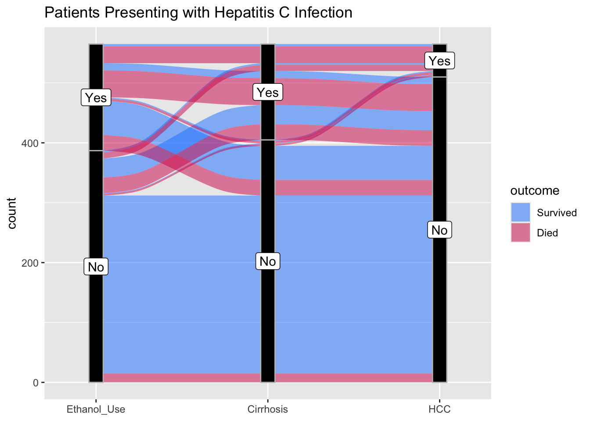
Now try this again. Copy the code below (click on the copy icon in the top right of the code chunk), paste it into your RStudio IDE, and edit to:
- show the progression of inpatients through therapies for Acute Severe Ulcerative colitis through the first 90 days of therapy. Code the outcome as Intact or Colectomy.
- Use the examples above to build your alluvial plot
datafr <- tibble::tribble(
~Day_1_Therapy, ~Day_7_Therapy, ~Day_28_Therapy, ~Day_90_Therapy, ~outcome, ~count,
"IVCS + Upa", "Pred + Upa", "Upa", "Upa", "Intact", 19,
"IVCS + Upa", "Pred + Upa", "Upa", NA, "Colectomy", 3,
"IVCS + Upa", "Pred + Upa", NA, NA, "Colectomy", 4,
"IVCS + Upa", "Cyclo", "Cyclo + IFX", "IFX", "Intact", 12,
"IVCS + Upa", "IFX", "IFX + Aza", "IFX + Aza", "Intact", 9,
"Upa", "Upa", "Upa", "Upa", "Intact", 12,
"Upa", "Upa", "Upa", NA, "Colectomy", 5,
"Upa", "Upa", NA, NA, "Colectomy", 7,
"Upa", "Cyclo", "Cyclo + IFX", "IFX", "Intact", 9,
"Upa", "IFX", "IFX + Aza", "IFX + Aza", "Intact", 7
) %>%
mutate(Day_1_Therapy = as_factor(Day_1_Therapy),
Day_7_Therapy = as_factor(Day_7_Therapy),
Day_28_Therapy = as_factor(Day_28_Therapy),
Day_90_Therapy = as_factor(Day_90_Therapy),
outcome = as_factor(outcome))datafr <- tibble::tribble(
~Day_1_Therapy, ~Day_7_Therapy, ~Day_28_Therapy, ~Day_90_Therapy, ~outcome, ~count,
"IVCS + Upa", "Pred + Upa", "Upa", "Upa", "Intact", 19,
"IVCS + Upa", "Pred + Upa", "Upa", NA, "Colectomy", 3,
"IVCS + Upa", "Pred + Upa", NA, NA, "Colectomy", 4,
"IVCS + Upa", "Cyclo", "Cyclo + IFX", "IFX", "Intact", 12,
"IVCS + Upa", "IFX", "IFX + Aza", "IFX + Aza", "Intact", 9,
"Upa", "Upa", "Upa", "Upa", "Intact", 12,
"Upa", "Upa", "Upa", NA, "Colectomy", 5,
"Upa", "Upa", NA, NA, "Colectomy", 7,
"Upa", "Cyclo", "Cyclo + IFX", "IFX", "Intact", 9,
"Upa", "IFX", "IFX + Aza", "IFX + Aza", "Intact", 7
) %>%
mutate(Day_1_Therapy = as_factor(Day_1_Therapy),
Day_7_Therapy = as_factor(Day_7_Therapy),
Day_28_Therapy = as_factor(Day_28_Therapy),
Day_90_Therapy = as_factor(Day_90_Therapy),
outcome = as_factor(outcome))
ggplot(datafr,
aes(y = count, axis1 = Day_1_Therapy,
axis2 = Day_7_Therapy,
axis3 = Day_28_Therapy,
axis4 = Day_90_Therapy)) +
geom_alluvium(aes(fill = outcome), width = 1/12) +
geom_stratum(width =1/12, fill = "black", color = "grey") +
geom_label(stat = "stratum", aes(label = after_stat(stratum))) +
scale_x_discrete(limits = c("Day_1_Rx", "Day_7_Rx", "Day_28_Rx", "Day_90_Rx"), expand = c(.18,0.1)) +
ggtitle("Patients Presenting with Acute Severe UC") +
scale_fill_manual(values = c("#1a85ff", "#d41159" )) 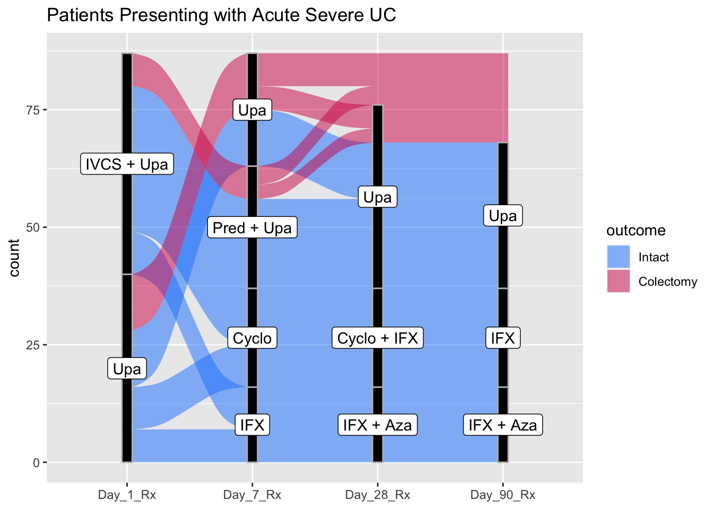
27.6 Lollipop Plots
While bar charts are quite popular for comparing continuous variables across categories, they have limitations. Humans are good at comparing length, but the bars add width, which is a distraction. Bar charts are also often used for counts, and it is not always clear whether a continuous or a discrete count variable is being plotted (a waffle chart can clear up discrete counts). For a continuous variable, you have a single point estimate (the end of the bar), and it is better to emphasize this estimate, without giving up the benefit of comparing lengths (which humans are good at). A lollipop plot emphasizes the continuous value, while de-emphasizing the width of a bar. Let’s look at an example below.
medicaldata::covid_testing %>%
mutate(positive = case_when(ct_result < 45 ~ 1,
ct_result >= 45 ~ 0)) %>%
group_by(demo_group) %>%
count(positive) %>%
filter(!is.na(positive)) %>%
mutate(freq = n/sum(n)) %>%
filter(positive==1) %>%
ggplot() +
aes(x = fct_reorder(demo_group, freq), y = freq) +
geom_lollipop(point.size = 5, point.colour = "red") +
scale_y_continuous(labels = scales::percent_format(scale = 100)) +
labs(y = "Percent Positive", x = "Demographic Category")## Warning: Using the `size` aesthetic with geom_segment was deprecated in ggplot2 3.4.0.
## ℹ Please use the `linewidth` aesthetic instead.
## This warning is displayed once every 8 hours.
## Call `lifecycle::last_lifecycle_warnings()` to see where this warning was
## generated.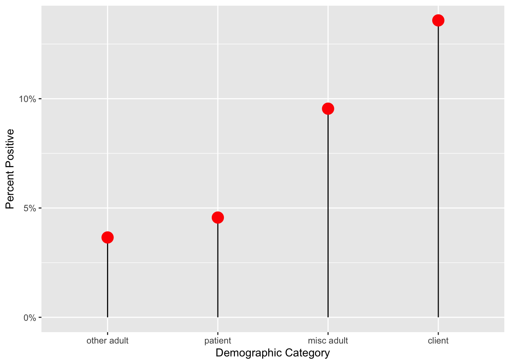
27.7 Dumbbell Plots
The Dumbbell Plot is a visualization that shows change between two points (usually 2 time points) in our data. It gets the name because of its dumbbell shape. It’s a great way to show changes in data between two points (think start and finish).
Note that a bit of data wrangling needs to be done to produce the correct data format for geom_dumbbell(). You may need to pivot_wider() to get 2 columns of data on distinct dates (in this case, month 1 vs month 4). See the data wrangling below to get mean age for these 2 months.
medicaldata::covid_testing %>%
filter(!str_detect(patient_class, "surgery")) %>%
mutate(pan_month = ceiling((pan_day)/30)) %>%
filter(pan_month %in% c(1,4)) %>%
pivot_wider(names_from = pan_month,
values_from = age,
id_cols = patient_class,
values_fn = function(x) mean(x, na.rm = TRUE),
names_prefix = "month_") ->
dumb_covid_data
dumb_covid_data## # A tibble: 6 × 3
## patient_class month_1 month_4
## <chr> <dbl> <dbl>
## 1 inpatient 3.42 8.68
## 2 not applicable 9.11 24.6
## 3 emergency 2.25 13.5
## 4 recurring outpatient 2.21 6.93
## 5 observation 2.55 12.2
## 6 outpatient 6.10 19.3dumb_covid_data %>%
ggplot(aes(x = month_1, xend = month_4, y = patient_class,
group = patient_class)) +
geom_dumbbell(size = 2, # size of line
size_x =4, size_xend = 4, # dot size
colour = "lightblue2", #line color
colour_x = "dodgerblue", # 1st dot color
colour_xend = "blue") + # end dot color
labs(x = "Mean Patient Age", y = "Patient Class",
title = "Increases in Mean Patient Age at a Pediatric Hospital \nfrom Month 1 to Month 4 of the Pandemic",
subtitle = "Keeping the Young Ones Safe at Home") +
xlim(1,25) + # set limits on x axis
theme_linedraw() +
theme(plot.title.position = "plot") # align title and subtitle to left edge, rather than to plot area+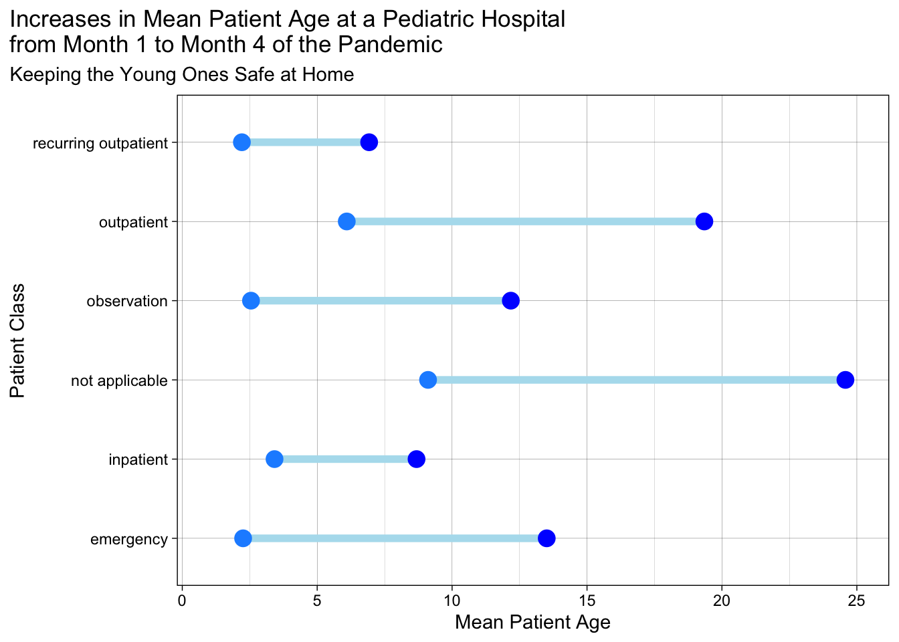
Now, this is a nice basic dumbbell plot. But you may want to make the direction of change from pre to post a bit more obvious with arrows.
We will start with loading some packages and creating a dataset with a ‘change’ variable for the change in C-reactive protein between day 1 and day 5 of a hospitalization for acute severe ulcerative colitis.
library(tidyverse)
library(ggtext)
dat <- tibble::tribble(~id, ~crp1, ~crp5,
"001", 47, 4,
"002", 14, 58,
"003", 34, 6,
"004", 129, 12,
"005", 81, 3,
"006", 65, 7)
dat %>% mutate(change = crp5-crp1) %>%
mutate(linedir = case_when(change<0 ~ -1,
TRUE ~ 1)) -> datTo help plot the points, we will add a long version of this simple dataset, created with pivot_longer.
Now we will make the arrow plot (a fancier version of the dumbbell plot, with added directionality). We will use ggtext to help us turn our title into a color legend.
#set custom colors
custom_days <- c("#1e90ff", "#1874cd")
custom_dir <- c("limegreen", "firebrick")
ggplot() +
# geom segment will plot arrows from the dat dataset
geom_segment(data = dat, aes(x = crp1, xend = crp5,
y = parse_number(id),
yend = parse_number(id),
color = as_factor(linedir)), linewidth = 1.5,
arrow = arrow(angle = 25, length = unit(0.5, "cm"))) +
# geom point will plot the points from the dat_long dataset
geom_point(data = dat_long,
aes(x = value, y = parse_number(id), fill = day), size = 4, shape = 22) +
theme_linedraw(base_size = 14) +
theme(plot.title = element_markdown()) +
# notice how we color the text in the title - this is allowed by `element_markdown` in the theme for plot.title. This makes the text function as a legend for the plot
labs(x = "CRP in mg/L", y = "Patient ID",
title = "Change in CRP from <span style = 'color:#1e90ff;'>Day 1</span> to <span style = 'color:#1874cd;'>Day 5</span>") +
scale_y_continuous(breaks = 1:6) +
scale_x_continuous(breaks = c(0,25,50,75,100,125,150)) +
theme(legend.position = "none") + # turn off the actual legend
scale_fill_manual(values = custom_days) +
scale_color_manual(values = custom_dir) +
coord_flip() # flip it so CRP goes up or down
This is another variant on the dumbbell plot that helps show directionality. We have used {ggtext} to format and color words in the title so that they can work as a legend. We have used custom colors for the arrows to show good (CRP going down) and bad (CRP rising) outcomes and directionalitywith the arrowheads.
27.8 Spaghetti Plots with Summary Smoothed Lines for Change Over Time
The Spaghetti Plot is a visualization that shows change over multiple time points for longitudinal data, which lets you see change in each individual as a line. It gets the name because the result (with method = “lm”) looks a bit like you scattered uncooked spaghetti (straight lines) on the plot. It’s a great way to show changes in data over multiple time points, and there are multiple variants, including summary smoothed lines.
Note that a bit of data wrangling needs to be done to produce the correct data format for geom_line(). You may need to pivot_longer() to get 1 row of data for each data point, and an id for each individual (multiple points making up a line. This id will often be a patient id (pat_id). We will read in some simulated data below for 4 time points. The variables are time point, the value, ses (2 categories), elderly (2 categories), and pat_id for 8 patients.
The code below will illustrate the basic spaghetti plot.
dat <- tibble::tribble(~time, ~value, ~ses, ~elderly, ~pat_id, 0,0,1,1,1, 1,3,1,1,1, 2,5,1,1,1, 3,8,1,1,1, 0,0,2,1,2, 1,4,2,1,2, 2,7,2,1,2, 3,9,2,1,2, 0,0,1,2,3, 1,5,1,2,3, 2,9,1,2,3, 3,11,1,2,3, 0,0,2,2,4, 1,5,2,2, 4, 2,9,2,2,4, 3,15,2,2,4, 0,0,1,1,5, 1,5,1,1,5, 2,6,1,1,5, 3,9,1,1,5, 0,0,2,1,6, 1,5,2,1,6, 2,8,2,1,6, 3,13,2,1,6, 0,0,1,2,7, 1,4,1,2,7, 2,8,1,2,7, 3,14,1,2,7, 0,0,2,2,8, 1,6,2,2,8, 2,8,2,2,8, 3,16,2,2,8)
ggplot(dat, aes(x = time, y = value,
group = factor(pat_id))) +
geom_smooth(formula = y ~ x, se = FALSE,
method = "lm") +
xlab("Observation Time Point") +
ylab("Y") 
As you can see, a bit like spilled (uncooked) spaghetti, with a line for each patient. Each patient is the same (default) color. Note that it is critical to group y the patient id (group = factor(pat_id)) so that ggplot knows which points go together as a line. If you remove this bit of code for the group argument, you get chaos from geom_smooth() or geom_line(). We can also let each patient’s line follow their actual values, rather than a fitted line, with a few modifications. Try this below.
ggplot(dat, aes(x = time, y = value,
group = factor(pat_id))) +
geom_point() +
geom_line() +
xlab("Observation Time Point") +
ylab("Y")  Now each patient is represented by a line (and points) with more detail than a fitted straight line.
Now each patient is represented by a line (and points) with more detail than a fitted straight line.
We can also chose to color these lines in two classes by ses (SocioEconomic Status) by setting color = factor(ses). We can make the legend neater by putting it inside the plot boundaries with theme (legend.position), and use the x and y range from 0 to 1 to position it as below.
ggplot(dat, aes(x = time, y = value,
group = factor(pat_id), color = factor(ses))) +
geom_point() +
geom_line() +
theme(legend.position = c(0.8, 0.2)) +
xlab("Observation Time Point") +
ylab("Y") ## Warning: A numeric `legend.position` argument in `theme()` was deprecated in ggplot2
## 3.5.0.
## ℹ Please use the `legend.position.inside` argument of `theme()` instead.
## This warning is displayed once every 8 hours.
## Call `lifecycle::last_lifecycle_warnings()` to see where this warning was
## generated.
If we want to summarize the overall pattern, we can use a geom_smooth() with the default loess smoothing. We set the color to “black”, rather than the color of either SES group. We need to turn off the grouping with group = NULL to get a single summary line. Note the loess smoothing produces a curve.
ggplot(dat, aes(x = time, y = value,
group = factor(pat_id), color = factor(ses))) +
geom_point() +
geom_line() +
theme(legend.position = c(0.8, 0.2)) +
xlab("Observation Time Point") +
ylab("Y") +
geom_smooth(formula = y ~ x, se=FALSE, size=2, method = "loess", color = "black", aes(group = NULL))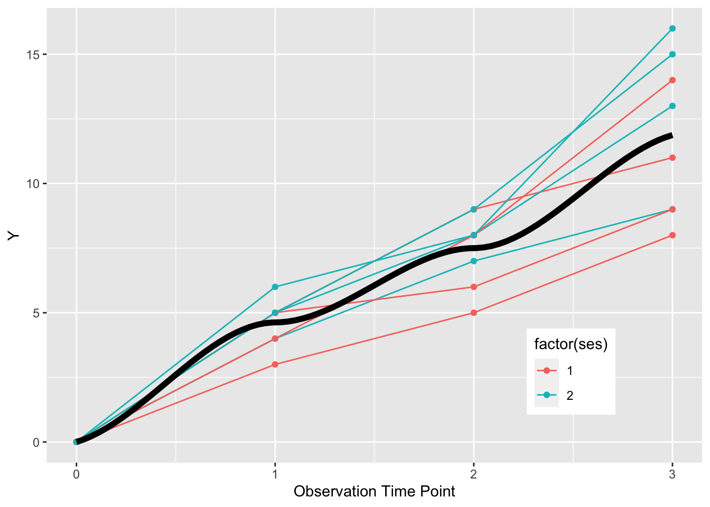
If we want to get fancy, we can also make summary curves for each ses group, and facet the plot by elderly status, as below.
elderly_labels <- c(
`1` = "Young",
`2` = "Old")
ggplot(dat, aes(x = time, y = value,
group = factor(pat_id), color = factor(ses))) +
geom_point() +
geom_line() +
theme(legend.position = c(0.8, 0.2)) +
xlab("Observation Time Point") +
ylab("Y") +
geom_smooth(se=FALSE, size=2, method = "loess", aes(group = NULL, color = factor(ses))) +
facet_grid(~elderly)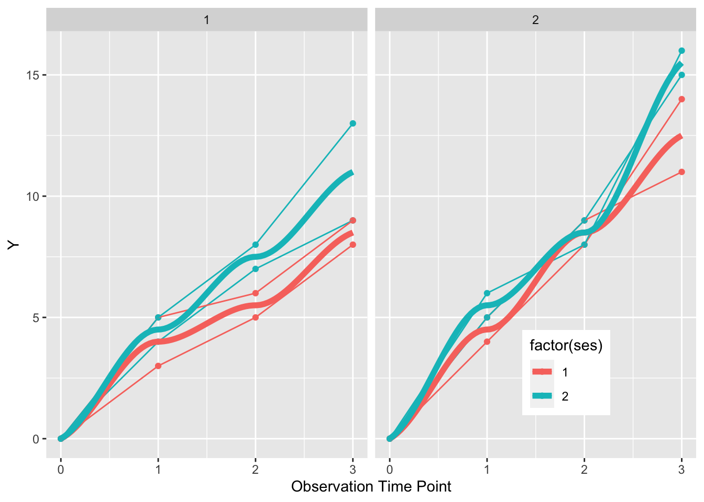
This gives us a plot faceted into two graphs, one for the elderly on the right, and the non-elderly on the left. Each individual is represented by points and a connected line. SES status is indicated by color, and a summary curve of each SES group is a thicker (size=1) loess curve.
Now try this yourself. Copy the code below (click on the copy icon in the top right of the code chunk), paste it into your RStudio IDE, and edit to: (Note you only have to read in the data (dat) once, just copy and edit the ggplot thereafter)
dat <- tibble::tribble(~ patid, ~week, ~crp, ~fcp, ~flare, ~dz_type, 1,1,0.7,191,1,"uc", 1,3,1.1,302,1,"uc", 1,8,1.5,507,1,"uc",
2,1,0.8,214,1,"cd", 2,3,1.2,412,1,"cd", 2,8,1.6,647,1,"cd",
3,1,0.7,137,0,"uc", 3,3,0.5,101,0,"uc", 3,8,0.4,58,0,"uc",
4,1,0.5,112,0,"cd", 4,3,0.3,81,0,"cd", 4,8,0.1,44,0,"cd",
5,1,0.6,119,0,"uc", 5,3,0.4,87,0,"uc", 5,8,0.3,57,0,"uc",
6,1,0.7,216,0,"cd", 6,3,0.5,161,0,"cd", 6,8,0.3,92,0,"cd",
7,1,0.9,267,1,"uc", 7,3,1.1,412,1,"uc", 7,8,1.9,692,1,"uc",
8,1,0.7,212,1,"cd", 8,3,1.1,342,1,"cd", 8,8,1.6,517,1,"cd",
9,1,0.9,197,0,"uc", 9,3,0.6,134,0,"uc", 9,8,0.4,86,0,"uc",
10,1,0.5,143,0,"cd", 10,3,0.4,101,0,"cd", 10,8,0.3,64,0,"cd",
11,1,0.7,217,0,"uc", 11,3,0.4,153,0,"uc", 11,8,0.3,51,0,"uc")
ggplot(dat, aes(x = week, y = crp,
group = factor(patid),
color= factor(patid))) +
geom_smooth(formula = y ~ x, se = FALSE,
method = "lm") +
xlab("Week") +
ylab("CRP") 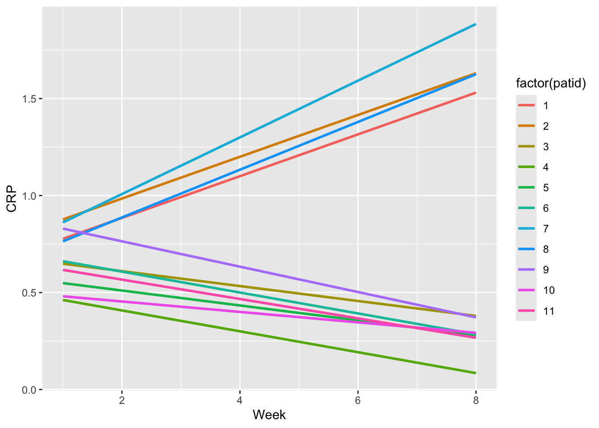
- See the initial plot above for CRP with smooth lines for each patient, then try it for FCP.
- Now plot the CRP values, and change the grouping to patid without colors, and use geom_point() and geom_line() rather than geom_smooth to see the CRP trends in black.
- Now plot the CRP values, and add to the aes, color = factor(dz_type) OR color= factor(flare) to group = factor(patid)
- Now plot the FCP values, and add the geom_smooth with group = NULL and color = factor(flare). Also facet_grid by dz_type, and see if you can improve the default legend title and labels (might need to google these).
Click on the Solution buttons below to toggle showing or hiding each solution.
ggplot(dat, aes(x = week, y = crp,
group = factor(patid),
color= factor(patid))) +
geom_smooth(formula = y ~ x, se = FALSE,
method = "lm") +
labs(x = "Week", y = "CRP", title = "CRP by week") +
scale_x_continuous(breaks = c(1,3,8)) +
expand_limits(x=0)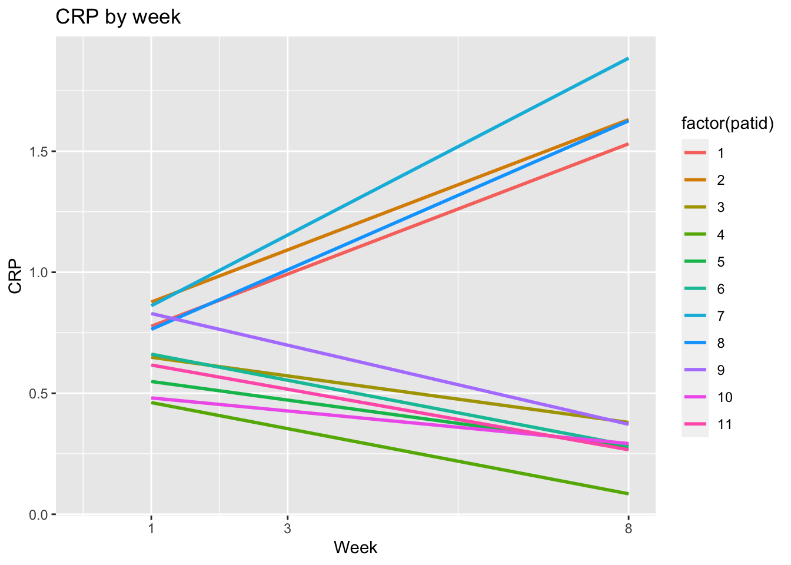
ggplot(dat, aes(x = week, y = crp,
group = factor(patid))) +
geom_point() +
geom_line() +
labs(x = "Week", y = "CRP", title = "CRP by week") +
scale_x_continuous(breaks = c(1,3,8)) +
expand_limits(x=0)
ggplot(dat, aes(x = week, y = crp,
group = factor(patid),
color = factor(flare))) +
geom_point() +
geom_line() +
labs(x = "Week", y = "CRP", title = "CRP by week") +
scale_x_continuous(breaks = c(1,3,8)) +
expand_limits(x=0) +
labs(color = "Flare")
ggplot(dat, aes(x = week, y = fcp,
group = factor(patid),
color = factor(flare))) +
geom_point() +
geom_line() +
labs(x = "Week", y = "FCP", title = "FCP by week") +
scale_x_continuous(breaks = c(1,3,8)) +
expand_limits(x=0) +
geom_smooth(se=FALSE, size=2, method = "loess", aes(group = NULL, color = factor(flare))) +
facet_grid(~dz_type) +
labs(color = "Flare") +
scale_color_discrete(breaks = c("1", "0"),
labels = c("Yes", "No"))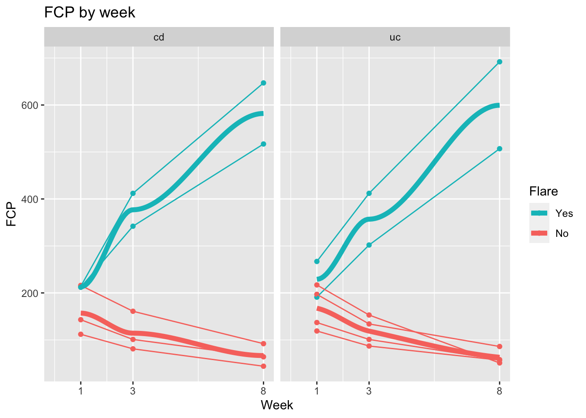
27.9 Swimmer Plots
The Swimmer Plot is a visualization that shows treatment timelines, with each patient in their own “lane”. It gets the name because it looks a bit like a pool at a swim meet, where you can see the progress of each patient over time. These can help visualize treatment or measurement patterns, clinical events, time-varying covariates, outcomes, and loss to follow-up in longitudinal data settings. These work well with a moderate number of patient courses (usually 10-50), and can be illuminating when new approaches to therapy are being tried in small numbers of patients, like a case series.
Note that this is not done with a particular package, but with standard geom_line and geom_point, but with a lot of customization in ggplot worth learning about.
This section borrows heavily from a nice blog post from statistician Kat Hoffman here. Note that a bit of data wrangling needs to be done to produce the correct data format for swimmer plots. We will read in some simulated data of COVID patients from spring 2020 from Kat Hoffman. The original data includes one row per day for each patient, with dichotomous outcomes for the events we are interested in: intubation status, use of steroids, the first day of severe hypoxia status, and death.
# install.packages(c("tidyverse","gt","RCurl","rmarkdown"))
library(tidyverse)
library(gt)
library(rmarkdown)
dat_long <- read_csv("https://raw.githubusercontent.com/kathoffman/steroids-trial-emulation/main/data/dat_trt_timeline.csv", col_types = list(id = "c", steroids = "c", death = "c", severe = "c"))
dat_long |> head()## # A tibble: 6 × 6
## id day intubation_status steroids death severe
## <chr> <dbl> <chr> <chr> <chr> <chr>
## 1 797 0 Not intubated 0 0 0
## 2 797 1 Not intubated 0 0 0
## 3 797 2 Not intubated 0 0 1
## 4 797 3 Not intubated 0 0 0
## 5 797 4 Not intubated 0 0 0
## 6 797 5 Not intubated 0 0 0We can use geom_line to plot the length of stay, with day on thex axis and lines colored by intubation status and grouped by patient id.
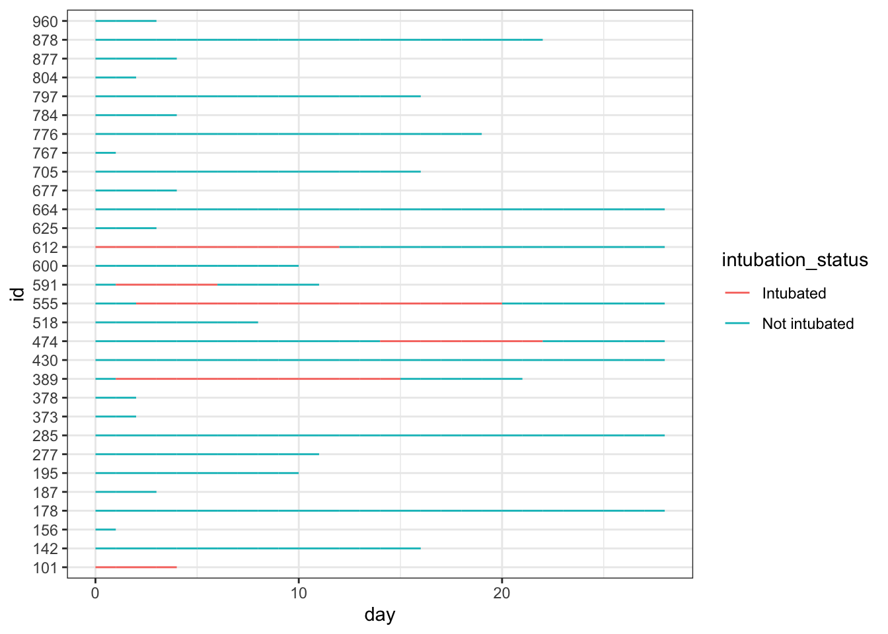
While this is very simple, it gives you a quick look at how these 30 simulated patients did in the hospital.
We can add steroid use by day as colored points with geom_point, in one added line of code, as seen below.
dat_long |>
ggplot(aes(x=day, y=id, col = intubation_status, group=id)) +
geom_point(aes(x=day, y=id, col = steroids)) +
geom_line() +
theme_bw() 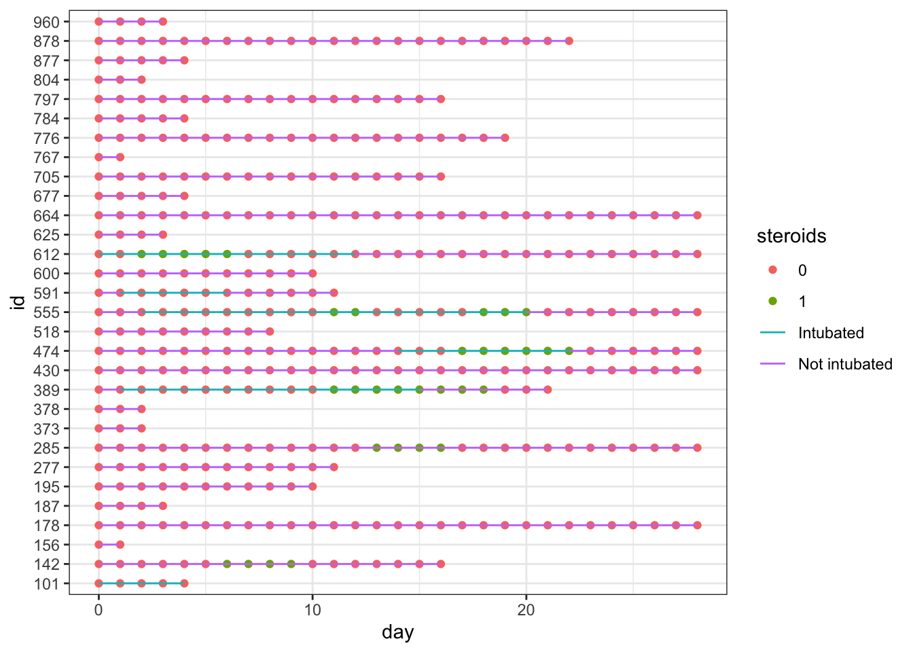
This gets a bit messy, as we have different colors of points (steroids on/steroids off) obscuring the colors of the lines indicating intubation. It is time for a bit of data wrangling.
To help clarify things in data wrangling step 1, let’s create new variables to specify on which day(s) steroids were used, the first day that severe hypoxia was present, and when death occurred. These variables will have lots of NA values when things did not occur - so that we won’t plot points when the events did not occur (NA days), and will have days for the values when the events occurred, which makes these easier to plot on the x axis. These NAs will be removed (and generate a lot of warnings) when plotting, so I will use an option to turn off messages and warnings in this section.
knitr::opts_chunk$set(message=F, warning=F)
dat_swim <-
dat_long |>
mutate(severe_this_day = case_when(severe == 1 ~ day),
steroids_this_day = case_when(steroids == 1 ~ day),
death_this_day = case_when(death == 1 ~ day))In in data wrangling step 2, it would also make it easier to read the plot if the patients were arranged by length of stay (max_day), so we will use fct_reorder() to make the patient ids (factors) ordered by length of stay.
dat_swim <-
dat_swim |>
group_by(id) |>
mutate(max_day = max(day)) |>
ungroup() |>
mutate(id = fct_reorder(factor(id), max_day))
head(dat_swim) |> paged_table()After this data wrangling, now we can plot the data again, arranged by LOS and with only the steroid used days as visible points.
dat_swim |>
ggplot() +
geom_line(aes(x=day, y=id, col = intubation_status, group=id)) +
geom_point(aes(x=steroids_this_day, y=id, col="Steroids", shape="Steroids")) +
theme_bw()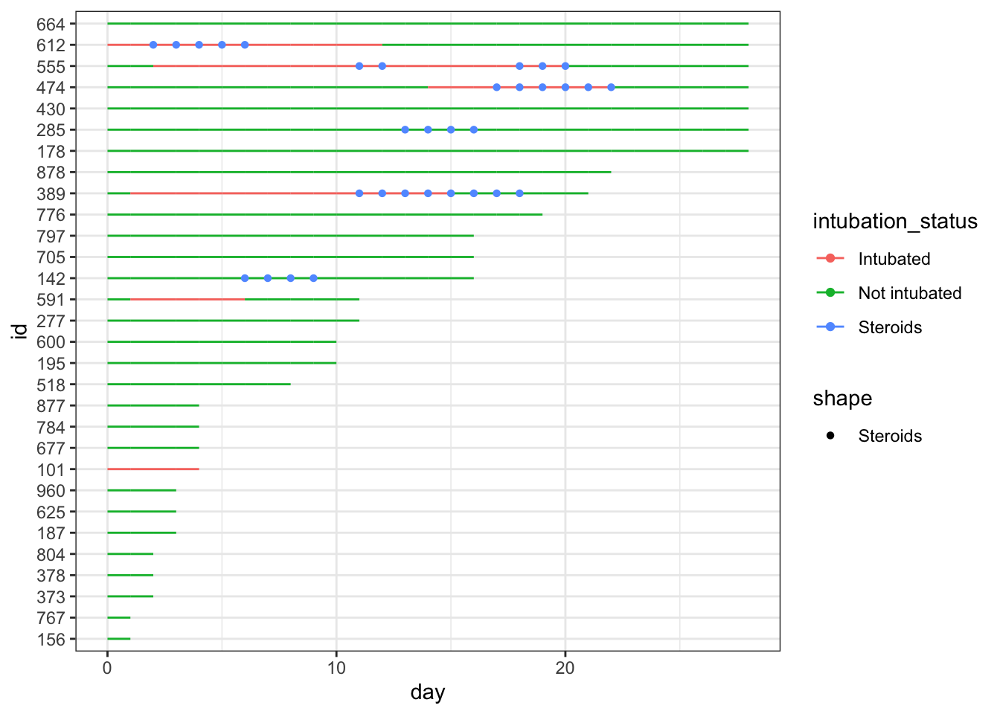
This is nicer to look at, though the legend is still a bit of a mess, and you can now clearly see that steroids were largely used for intubated patients at this point. It would look nicer if the lines were nearly as thick as the points, so that they are less obscured. Let’s fix this with a larger geom_line size, and format the steroid points with a shape for contrast.
dat_swim |>
ggplot() +
geom_line(aes(x=day, y=id, col = intubation_status, group=id),
size=1.8) +
geom_point(aes(x=steroids_this_day, y=id, col="Steroids"), stroke=2, shape=15) +
theme_bw()
Now we add important clinical events - we can add severe hypoxia events and death events to the plot, with additional point geoms with distinct shapes for each of these.
dat_swim |>
ggplot() +
geom_line(aes(x=day, y=id, col = intubation_status, group=id),
size=1.8) +
geom_point(aes(x=steroids_this_day, y=id, col="Steroids"), stroke=2, shape=15) +
theme_bw() +
geom_point(aes(x=severe_this_day, y=id, col="Severe hypoxia"), size=2, stroke=1.5, shape=21) +
geom_point(aes(x=death_this_day, y=id, col="Death"), size=2, stroke=1.5, shape=4) 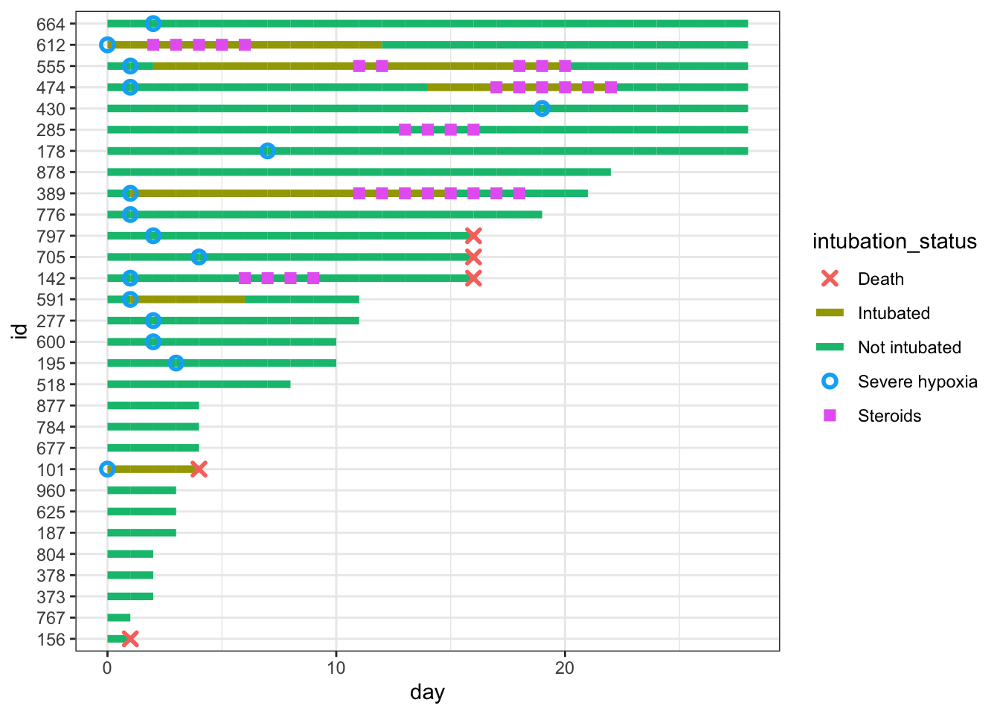
We can fine-tune the colors and improve the legend name below. We will save the plot as p, and add more to it in future steps.
# define colors for all geometries with a color argument
cols <- c("Severe hypoxia" = "#b24745", # red
"Intubated" = "#483d8b", # navy
"Not intubated" = "#74aaff", # light blue
"Steroids"="#ffd966", # gold
"Death" = "#000000") # black
p <- dat_swim |>
ggplot() +
geom_line(aes(x=day, y=id, col = intubation_status, group=id),
size=1.8) +
geom_point(aes(x=steroids_this_day, y=id, col="Steroids"), stroke=2, shape=15) +
theme_bw() +
geom_point(aes(x=severe_this_day, y=id, col="Severe hypoxia"), size=2, stroke=1.5, shape=21) +
geom_point(aes(x=death_this_day, y=id, col="Death"), size=2, stroke=1.5, shape=4) +
scale_color_manual(values = cols, name="Patient Status")
pThis is really coming along. But the legend symbols are accurate for colors, but don’t reflect the shapes we used, as we did not use aes() to create the shapes. To override the default shapes, lines, etc. in the legend, we need to use the guides() function, and override guide_legend(). This lets you manually specify the shapes. Let’s start by first defining the corresponding shapes (with NA when we don’t want a point), then overriding the shapes, and update our plot.
shape_override <- c(4, NA, NA, 21, 15) # order matches `cols`:severe, intubation (yes/no), steroids, death, with the appropriate shapes
# modify the color legend to include the correct shapes
p +
guides(color = guide_legend(
override.aes = list(
shape = shape_override)
))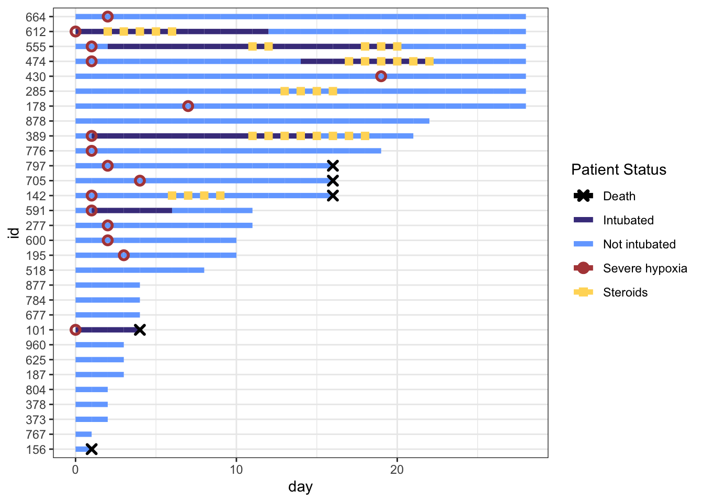
That worked well. Now let’s remove the lines though Death, Severe Hypoxia, and Steroids, by overriding the line type (1 for a standard line or NA for no line), then fine tune the stroke and size for each of these geom points. Note that for shapes 21-24 in R, you have to separately specify stroke (for outer line) and fill (if any), while shapes 1-20 just require a size.
line_override <- c(NA,1,1,NA,NA) # order matches `cols`:severe, intubation (yes/no), steroids, death
stroke_override <- c(1.2,1,1,1,1.4) # order matches `cols`:severe, intubation (yes/no), steroids, death
size_override <- c(2.5,2.5,2.6,2.5,2) # order matches `cols`:severe, intubation (yes/no), steroids, death
p <-
p +
guides(color = guide_legend(
override.aes = list(
shape = shape_override,
linetype = line_override,
stroke = stroke_override,
size = size_override)
))
pNow the legend looks nice. Let’s add a few more aesthetic tweaks, including title and better axis labels.
p <- p +
labs(x="Days since hospitalization",y="Patient\nnumber",title="COVID Treatment Timeline for 30 Patients") +
scale_x_continuous(expand=c(0,0)) + # remove extra white space
theme(# text=element_text(family="Poppins", size=11),
title = element_text(angle = 0, vjust=.5, size=12, face="bold"),
axis.title.y = element_text(angle = 0, vjust=.5, size=12, face="bold"),
axis.title.x = element_text(size=15, face="bold", vjust=-0.5, hjust=0),
axis.text.y = element_text(size=6, hjust=1.5),
axis.ticks.y = element_blank(),
legend.position = c(0.8, 0.3),
legend.title = element_text(colour="black", size=13, face=4),
legend.text = element_text(colour="black", size=10),
legend.background = element_rect(size=0.5, linetype="solid", colour ="gray30"),
panel.grid.minor = element_blank(),
panel.grid.major.x = element_blank()
)
p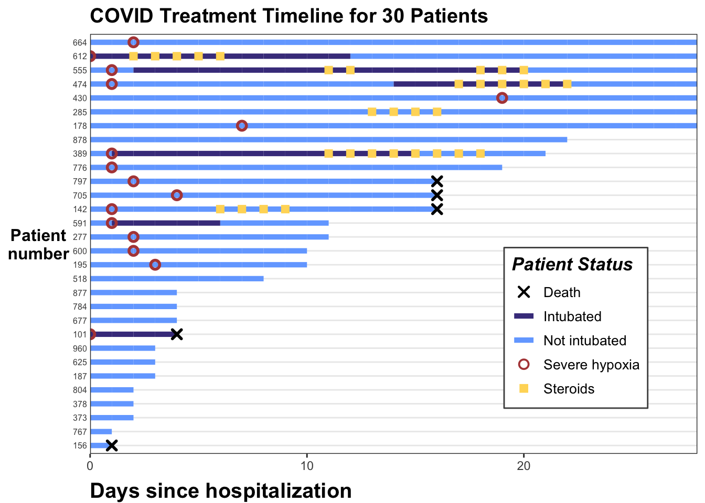
And we are done. You can see how this can illustrate the hospital course for a number of patients, and transmit a lot of longitudinal information quickly when the number of patients is not too long.
Let’s try another swimmer plot, using some simulated data from a study of patients after liver transplant. Some of these patients develop ascites (increased fluid in the abdominal peritoneal cavity) that requires large volume paracentesis to remove. If this becomes frequent, it can cause major fluid shifts and problems with kidney function. Sometimes taking the spleen out of the system with splenectomy (surgical removal) or SAE (splenic artery embolism) can reduce the need for large volume paracentesis. Let’s look at this with a small dataset of 12 patients who developed ascites after liver transplantation and received SAE (splenic artery embolization). Run the code chunk below to read in the data.
In this code chunk, we do a bit of data wrangling as well, properly formatting the dates, and calculating the length of time in days before or after the SAE (splenic artery embolization). Note that the default units are seconds, so we need to divide by (3600*24) to get days.
library(tidyverse)
library(readxl)
library(lubridate)
library(openxlsx)
swim_liver <- read.csv('data/swim_liver.csv') |>
mutate(olt_date = mdy(olt_date),
sae_date = mdy(sae_date),
lvp_date = mdy(lvp_date),
eofu_date = mdy(eofu_date),
pat_id = factor(pat_id))The key events are olt - orthotopic liver transplant, sae (splenic artery embolism), lvp (large volume paracentesis), and eofu (end of follow up). Each patient has an id and multiple events occur. Each patient also has a MELD score (meld = model for end-stage liver disease), which measures how sick they were before the liver transplant (higher scores are worse). We will start by drawing the line segments from liver transplant to end of followup, colored by meld score at the time of transplant.
swim_liver %>%
ggplot() +
geom_segment(aes(x = start, xend = end,
y = fct_reorder(pat_id, meld),
yend = fct_reorder(pat_id, meld),
color = meld)) +
geom_vline(xintercept = 0) +
theme_bw()
Now, let’s add the large volume paracentesis events as points with geom_point.
swim_liver %>%
filter(days_from_sae <= end) |>
ggplot() +
geom_segment(aes(x = start, xend = end,
y = fct_reorder(pat_id, meld),
yend = fct_reorder(pat_id, meld),
color = meld)) +
geom_point(aes(x=days_from_sae,
y = fct_reorder(pat_id, meld)),
color = "black") +
geom_vline(xintercept = 0) +
theme_bw() +
scale_color_continuous(low = "dodgerblue1", high = 'dodgerblue4') 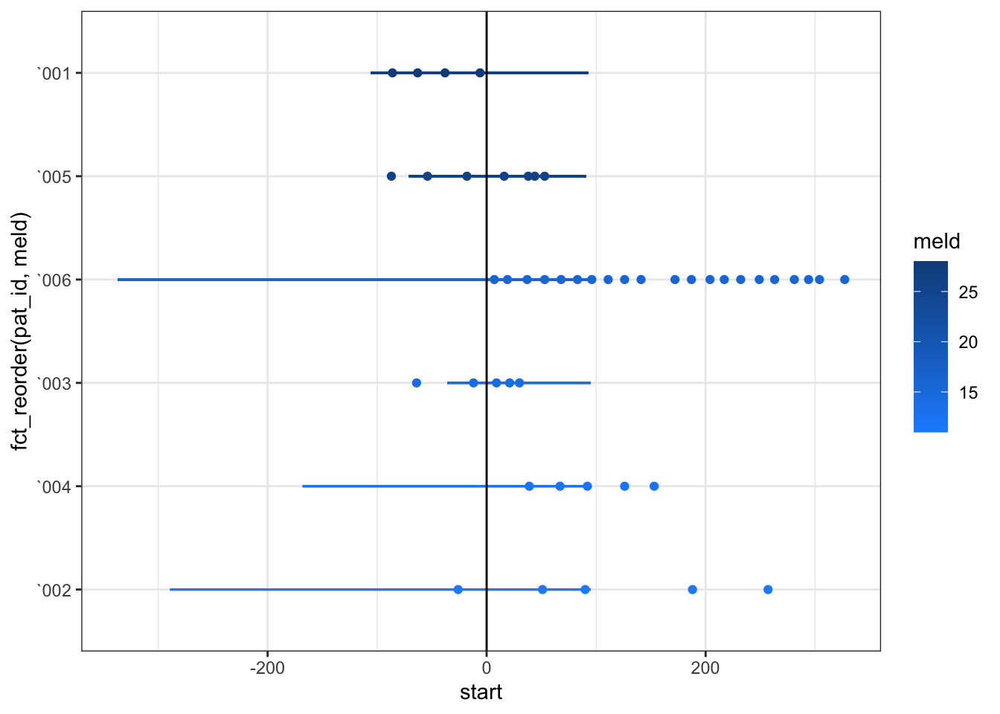
Now we can increase the linewidth and the size of the points to make this clearer.
swim_liver %>%
filter(days_from_sae <= end) |>
ggplot() +
geom_segment(aes(x = start, xend = end,
y = fct_reorder(pat_id, meld),
yend = fct_reorder(pat_id, meld),
color = meld), size = 2) +
geom_point(aes(x=days_from_sae,
y = fct_reorder(pat_id, meld)), size =3) +
geom_vline(xintercept = 0) +
theme_bw() +
scale_color_continuous(low = "dodgerblue1", high = 'dodgerblue4') 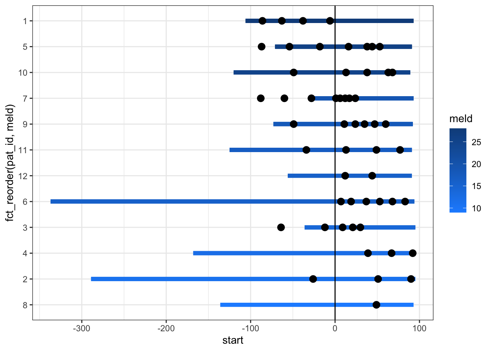
The labels on axes and the legend are a bit of a mess still. We can clean this up and add red circles for the transplant events. We can move the legend inside the plot, and add some explanatory text as an annotation. It appears that the SAE (at day 0 in this pre-post swimmer plot) provides a lot of benefit to the mild to moderate MELD patients by reducing their need for large volume paracentesis. Those with severely high MELD scores don’t seem to get as much benefit.
swim_liver %>%
filter(days_from_sae <= end) |>
ggplot() +
geom_segment(aes(x = start, xend = end,
y = fct_reorder(pat_id, meld),
yend = fct_reorder(pat_id, meld),
color = meld), size = 2) +
geom_point(aes(x=days_from_sae,
y = fct_reorder(pat_id, meld)), size =3) +
geom_point(aes(x = start, y = fct_reorder(pat_id, meld)),
shape =1, color = "red", stroke =2, size =3) +
geom_vline(xintercept = 0) +
annotate("text", x = -225, y= 11.5, label = "Red circles represent\nthe OLT date, \nEach black dot represents\none large volume\nparacentesis, \n Splenic Intervention at Day 0") +
theme_bw() +
scale_color_continuous(low = "dodgerblue1", high = 'dodgerblue4') +
labs(x="Days Relative to Splenic Intervention",y="Patient\nnumber",title="Large Volume Paracentesis\nTimeline for 12 Patients from OLT Date\nto End of FollowUp") +
theme(# text=element_text(family="Poppins", size=11),
title = element_text(angle = 0, vjust=.5, size=12, face="bold"),
axis.title.y = element_text(angle = 0, vjust=.5, size=12, face="bold"),
axis.title.x = element_text(size=15, face="bold", vjust=-0.5, hjust=0),
axis.text.y = element_text(size=10, hjust=1.5),
axis.ticks.y = element_blank(),
legend.position = c(0.12, 0.6),
legend.title = element_text(colour="black", size=13),
legend.text = element_text(colour="black", size=10),
legend.background = element_rect(size=0.5, linetype="solid", colour ="gray30"),
panel.grid.minor = element_blank(),
panel.grid.major.x = element_blank()
) 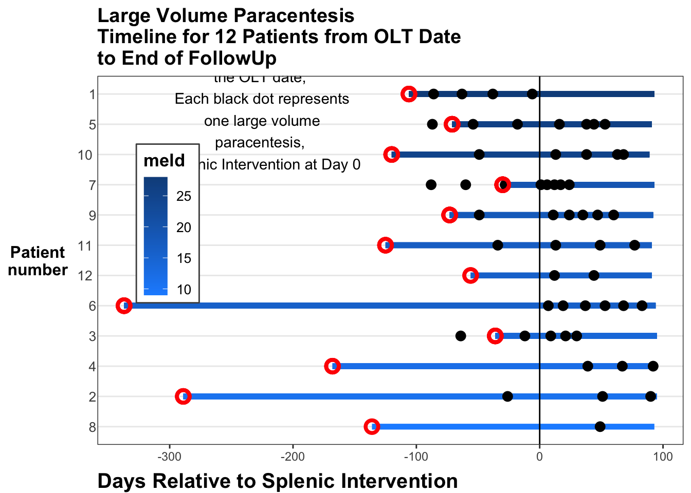
You can explore other (similar) approaches to swimmer plots, including the {swimmer} package here in a blog post by Jessica Weiss.
27.10 Adding Significance Comparisons with {ggsignif}
It is common to compare continuous outcomes across categories with scatter plots or box plots, but we often see comparison bars and p values added. This can be added to a ggplot with the {ggsignif} package. Let’s load some libraries and some data in the code chunk below. Then we will do a basic boxplot.
library(tidyverse)
library(ggsignif)
library(medicaldata)
dat <- medicaldata::diabetes
ggplot(dat) +
aes(x = fct_lump(as_factor(pregnancy_num), n = 3), y = `glucose_mg-dl`) +
geom_boxplot() +
labs(y = "Glucose in mg/dL",
x = "Pregnancy Number") +
theme_bw() 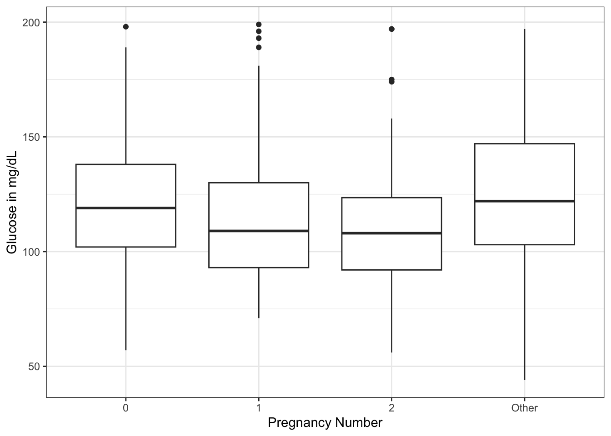
There seems to be a downward trend of fasting serum glucose from 0 to 2 pregnancies, then a rise in glucose with >=3 pregnancies. Now imagine that you would like to know if the difference in mean glucose between 0 and 2 pregnancies, or 2 and more than 2, are significant. And you want to display it on your plot. You can use the geom_signif() geom from the {ggsignif} package. The arguments include the: - comparisons = list(c(“cat1”, “cat2”)) # in quotes with names, or use the numbers of categories from left to right - y_position = NN # manually control where on y axis - tip_length = 1 (can use 0, 0.5, modify as needed - xmin and xmax - can set the width. If you have more than one comparison, can use a vector, i.e. xmin = c(0.1, 1.8) - annotation - can replace p value with “NS” or “**“, or whatever you want - vjust = -0.2 (set a value to adjust the vertical justification of the annotation of p value - above or below the bar as needed)
library(tidyverse)
library(ggsignif)
library(medicaldata)
dat <- medicaldata::diabetes
ggplot(dat) +
aes(x = fct_lump(as_factor(pregnancy_num), n = 3), y = `glucose_mg-dl`) +
geom_boxplot() +
labs(y = "Glucose in mg/dL",
x = "Pregnancy Number") +
theme_bw() +
geom_signif(y_position = 200,
comparison = list(c(1,3)),
tip_length = 0.005) +
geom_signif(y_position = 195,
comparison = list(c(1,2)),
tip_length = 0.01) +
geom_signif(y_position = 197,
comparison = list(c(3,4)),
tip_length = 0.02) +
geom_signif(y_position = 179,
comparison = list(c(2,3)),
tip_length = 0.02,
annotation = "NS") 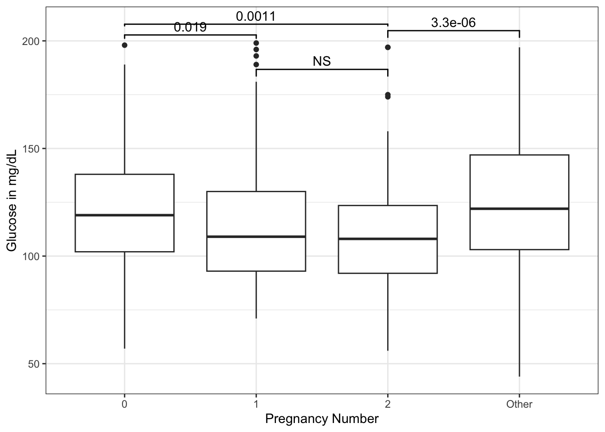
We can add specific pairwise comparisons and position their height (on the y axis) with geom_signif.
You can learn more about the {ggsignif} package at its webpage.
Now try this yourself. Copy the code below (click on the copy icon in the top right of the code chunk), paste it into your RStudio IDE, and edit to:
- compare spring to summer
- compare summer to winter
- put these at appropriate y_postions with appropriate tip_lengths - your choice
library(tidyverse)
library(ggsignif)
library(medicaldata)
dat <- medicaldata::abm |>
mutate(season = case_when(month >5 &
month <9 ~ "summer",
month >2 &
month <6 ~ "spring",
month >8 &
month <12 ~ "fall",
TRUE ~ "winter"))
ggplot(dat) +
aes(x = season, y = csf_gluc) +
geom_boxplot() +
labs(y = "CSF Glucose in mg/dL",
x = "Season") +
theme_bw()
library(tidyverse)
library(ggsignif)
library(medicaldata)
dat <- medicaldata::abm |>
mutate(season = case_when(month >5 &
month <9 ~ "summer",
month >2 &
month <6 ~ "spring",
month >8 &
month <12 ~ "fall",
TRUE ~ "winter"))
ggplot(dat) +
aes(x = season, y = csf_gluc) +
geom_boxplot() +
labs(y = "CSF Glucose in mg/dL",
x = "Season") +
theme_bw() +
geom_signif(y_position = 200,
comparison = list(c(2,3)),
tip_length = 0.005) +
geom_signif(y_position = 190,
comparison = list(c(3,4)),
tip_length = 0.01)